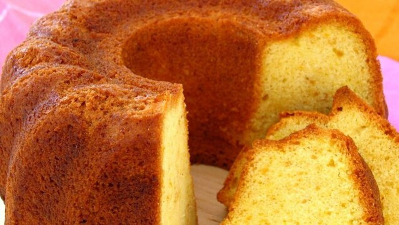
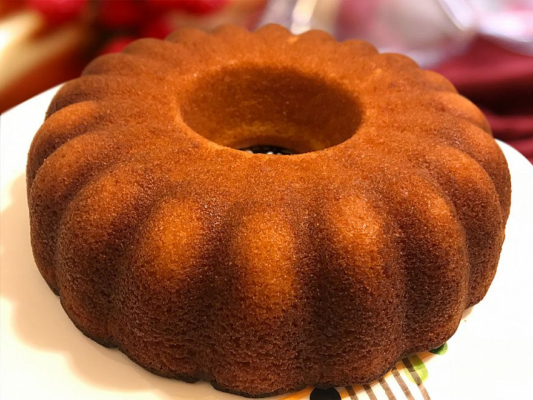

Kek Tarifi

- 3 Adet Yumurta
- 1 su bardağı şeker
- Yarım su bardağı sıvı yağ
- 1 su bardağı süt
- 1 paket kabartma tozu
- 1 paket vanilya
- Un (yaklaşık 2.5 su bardağı kadar)

- İlk olarak kekimizin hamurunu hazırlıyoruz. Yumurta ve şeker iyice çırpılır.
- Daha sonra diğer malzemeler ilave edilir ve tekrar çırpılır.
- Kuru malzemeleri eleyerek ilave etmekte fayda var. Kek hamurumuz hazır.
- Kekimizi pişmeye bırakıyoruz. Sade kek hamurumu yağlanmış kek kalıbına dökülür.
- 160 derecede önceden ısıtılmış fırında yaklaşık 50 dk kadar pişirilir. Pişirme esnasında ilk 30 dk kapağı açmayalım. 30 dk sonrasında da kabarmış ve üzeri pembeleşmiş kekimizi gözlemlemeye başlayabilirsiniz. Kenarlar kalıptan ayrılmış kekimizi kürdan testini de yaptıktan sonra fırından alıp soğumaya bırakabiliriz
- Pişen keki kalıptan çıkartıyoruz. Fırından aldıktan en az 15 dk kadar sonra ilk sıcaklığı çıkan yumuşacık sade keki kalıptan çıkartabilirsiniz. Afiyet olsun.